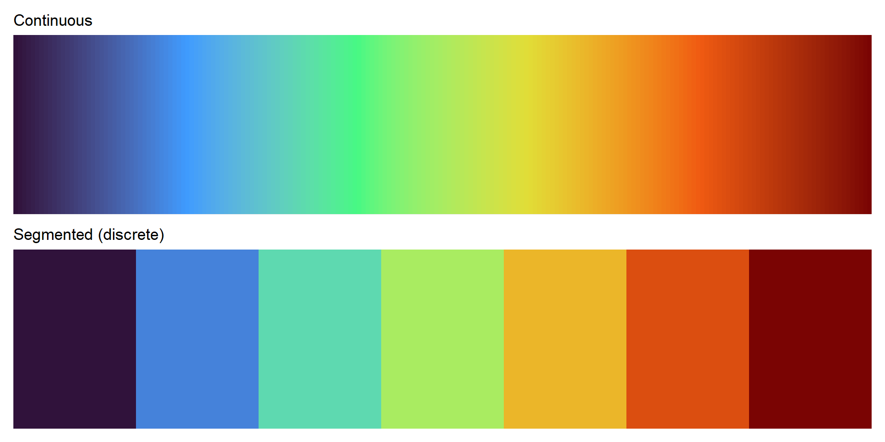
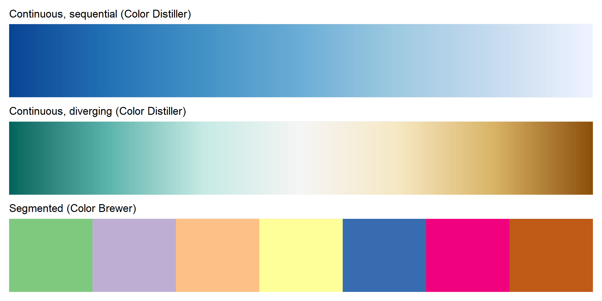
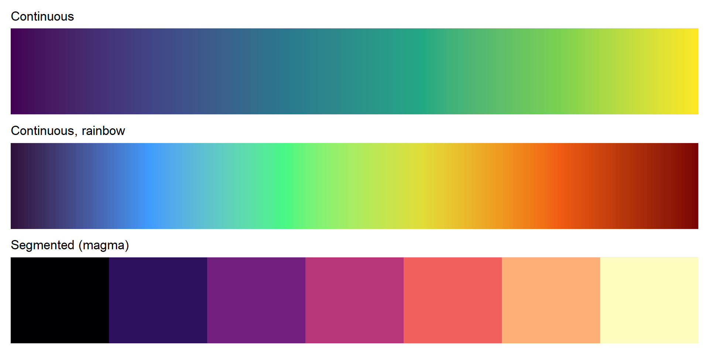

Lecture 13: Color
Brian J. Smith
2026-03-24
Color
The beginning of this lecture is based on Chapter 10 of Visualization Analysis & Design.
“Map Color and Other Channels”
For this lecture, I’m going to start with some color theory from the VAD Text, incorporate a few other sources of information, then transition over to working with color in R.

Color Theory
Color Vision
- Our eyes have two kinds of receptors:
- Rods
- Actively contribute to vision only in low-light settings.
- Provide low-resolution black & white information.
- Cones
- Main sensors in normal lighting.
- Three types of cones for different wavelengths.
- Rods
Color Vision
- Our visual system processes these signals into three opponent color channels:
- One from red to green,
- one from blue to yellow,
- and one from black and white (luminance).
- The luminance channel provides high-resolution edge detection.
- Red-green and blue-yellow channels are lower resolution.
- There is an important distinction between:
- Luminance – how bright or dark a color is.
- Chromaticity – what most people informally call “color”.
Color Vision
- Color blindness, more accurately termed color deficiency, affects a person’s ability to distinguish color along one of the chormaticity channels.
- There are three types of color deficiency:
- Deuteranopia and protanopia
- Affect red-green channel.
- Are sex-linked (~ 8% of men).
- Tritanopia
- Affects blue-yellow channel.
- Extremely rare, not sex-linked.
- Deuteranopia and protanopia
Color Spaces
- The color space of what we can detect is three-dimensional.
- It can be adequately described by three orthogonal axes.
- There are many ways to define these axes and convert between them.
- Some color spaces are:
- convenient/commonly used (e.g., RGB)
- designed to match our vision (e.g., HSL)
RGB
- Red, green, blue.
- Computationally convenient.
- Not useful as separable channels; create an integral perception.
- Additive color model.
- Screens emit light.
- Not covered in the VAD textbook.
RGB
- Device-dependent color model.
- Colors can vary slightly between devices,
- or on a device over time.
- TVs, cameras, scanners, video cameras, smartphones, etc.
- See the Wikipedia RGB color model page.
RGB
- Given as a triplet of red, green, blue values.
- May range from 0 – 1.
- More commonly range from 0 – 255.
- Often coded using two hexadecimal digits (0-9, A-F).
CMYK
- Subtractive color model.
- Inks absorb light.
- Cyan, magenta, yellow, black (= “key”).
- Used in color printing.
- Not even mentioned in the VAD textbook.
- See the Wikipedia CMYK color model page.
HSL/HSV
- HSL = Hue, saturation, lightness.
- HSV = Hue, saturation, grayscale value.
- V is linearly related to L.
- More intuitive and heavily used by artists and designers.
HSL
- Hue captures what we normally think of as “pure” colors.
- E.g., red, blue, green, yellow, purple, etc.
- Not white or black.
- Saturation captures the amount of white mixed with the color.
- E.g., pink is desaturated red (more white mixed in).
- Lightness captures the amount of black mixed with the color.
- E.g., controlling the darkness of a gray.
HSL
- HSL is pseudoperceptual.
- It doesn’t truly reflect how we perceive color.
“In particular, lightness L is wildly different from how we perceive luminance.”
HSL
{kind=link}
- Lightness is all the same here.
- True luminance is as measured with an instrument.
- L* is perceptually linear, the closest to what we see.
HSL
- Our perception of luminance depends on the wavelength of the light.
- Our spectral sensitivity curve for daylight vision is almost bell-shaped.
{kind=link}
Choosing Color Channels
Choosing Color Channels
- Magnitude channels (ordered):
- Luminance
- Saturation
- Identity channels (categorical):
- Hue
- Other channels (complementing the others):
- Transparency
Choosing Color Channels
- We automatically perceive luminance and saturation as ordered.
- We do not automatically perceive hue as ordered.
{kind=link}
Magnitude Channels
- Luminance is suitable for ordered data.
- We have low accuracy in perceiving luminance of noncontiguous regions.
- Due to contrast effects.
- Number of discriminable bins is probably < 5 if the background is not uniform.
- Luminance contrast is very important for resolving fine details.
- E.g., we can’t read text without luminance contrast.
- Hue and saturation are not important for this.
- If we use the luminance channel for our data, we may not have it to use for other reasons.
Magnitude Channels
- Saturation is also suitable for ordered data.
- Also has the low accuracy problem for noncontiguous regions.
- Number of discernable steps is around 3.
- Interacts strongly with size:
- Small marks (e.g., points/lines) are harder to discern.
- Probably only want to use two saturation bins for small marks.
Identity Channels
- Hue is appropriate for categorical data.
- Hue is the highest ranked channel for categorical data after spatial position.
- Also hard to make small comparisons in noncontiguous regions.
- Also harder to distinguish in smaller marks.
Other Channels
- Transparency is a fourth available channel.
- It interacts strongly with luminance and saturation and should not be used in conjunction with those two.
- It can be used with hue for a small number of bins, often two.
- Most often used with superimposed layers.
- Create a foreground layer distinguishable from the background.
- Frequently used redundantly.
- Same information also in another channel.
Colormaps
Colormaps
- Colormaps specify the mapping between colors and data values.
- AKA, pseudocoloring or color ramps.
- Mostly use a combination of hue, saturation, and luminance to encode data.
- Rather than using the three independently as different channels.
Colormaps
- Categorical
- Ordered
- Sequential
- Diverging
{kind=link}
Colormaps
- Colormaps can be continuous or segmented.

Colormaps
- ColorBrewer is a good source for colormaps:
- Easily accessible in R with
RColorBrewer.

Colormaps
viridiswas created to have perceptual advantages.- It was created for R and has since been ported to other places.
- Check out the viridis website.
- The
viridisvignette is a good source of information about the various colormaps.

Other Useful R Packages
colorspacenationalparkcolorspaletteer(a comprehensive collection of other palettes)